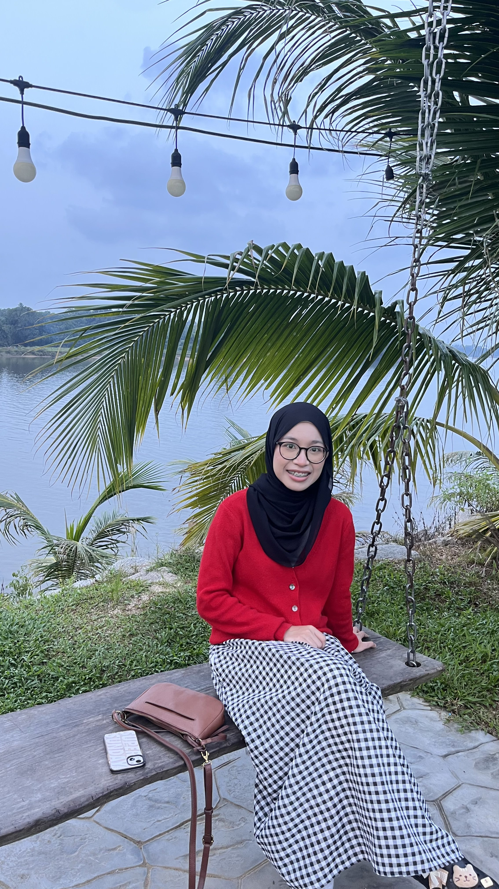
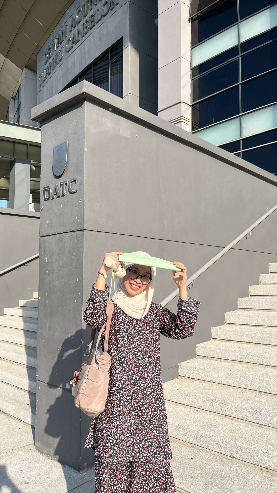
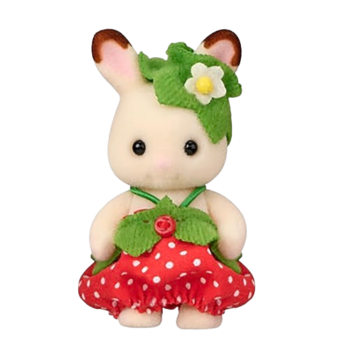
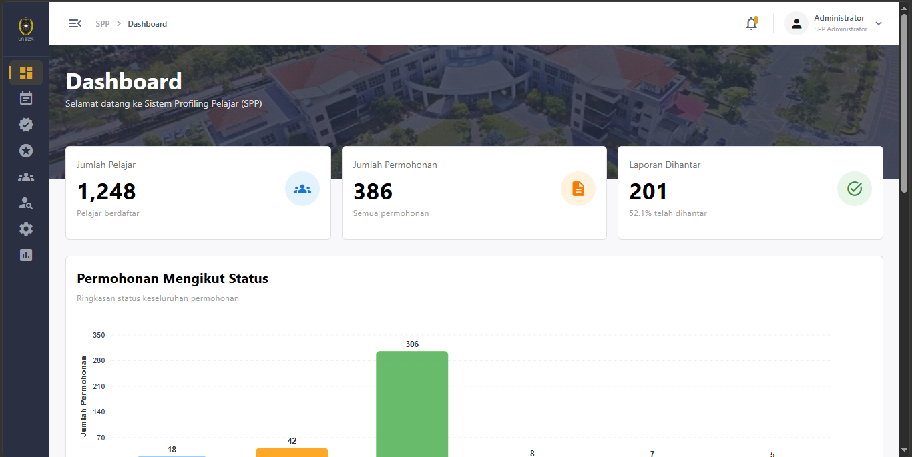
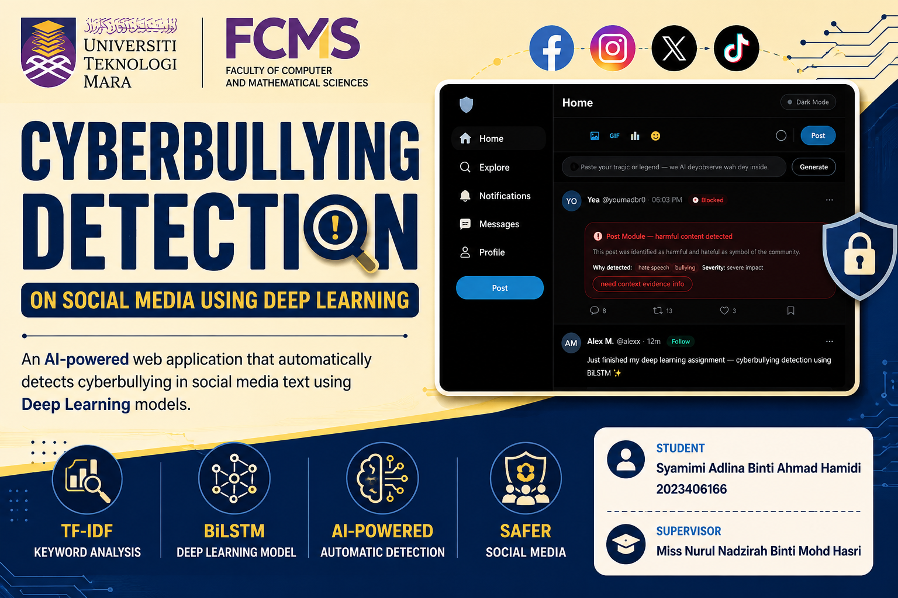
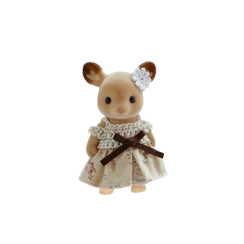

Data Analytics & BI
Exploring data, creating visual reports and communicating insights to support better decisions.
Thank you for reaching out. I'll get back to you soon.
Passionate about data analytics, artificial intelligence and building digital solutions that make information meaningful.



I'm an Information Systems graduate from Universiti Teknologi MARA (UiTM), specialising in Intelligent Systems Engineering. I am passionate about exploring how data, technology and innovative solutions can solve real-world problems.
Throughout my academic journey, I gained experience in artificial intelligence, deep learning and system development. I also developed a cyberbullying detection project using BiLSTM and gained hands-on experience in web development through my IT internship.
My interests include Data Analytics, Business Intelligence, Artificial Intelligence and Web Development. I enjoy learning new technologies and transforming ideas into meaningful digital solutions.
Technologies and tools I've explored through academic projects, continuous learning and hands-on experience.
Exploring data, creating visual reports and communicating insights to support better decisions.
Applying machine learning and deep learning concepts to real-world text classification challenges.
Building approachable, responsive interfaces and information systems with usability in mind.
A collection of projects showcasing my experience in artificial intelligence, data analytics and web development.

Contributing to a student profiling and reporting system with a focus on useful, accessible information for staff.
An internship project involving the development of a student profiling and reporting system to support information management and staff reporting activities.
Focus: Web Development, Dashboard Design, Information Management

Exploring how a BiLSTM model can classify social media text and support cyberbullying detection.
A final year project that applies a Bidirectional LSTM (BiLSTM) model to identify potential cyberbullying in social media text.
Dataset: Kaggle
Technologies: Python, BiLSTM, NLP, Deep Learning
More projects and screenshots will be added as this portfolio grows.

Interested in connecting about technology, projects or opportunities? Feel free to send me a message.